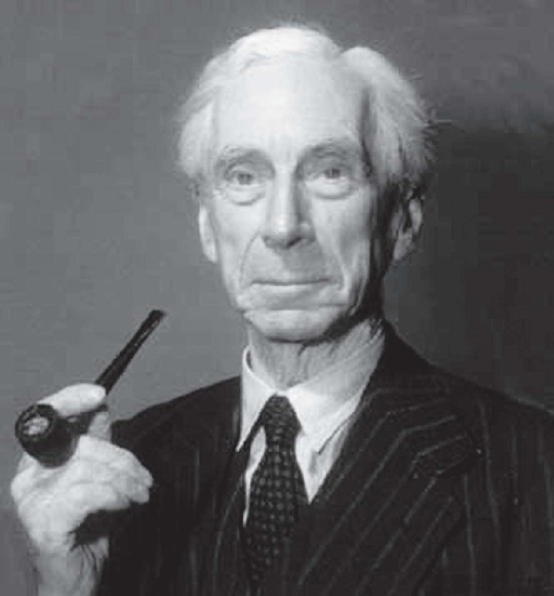
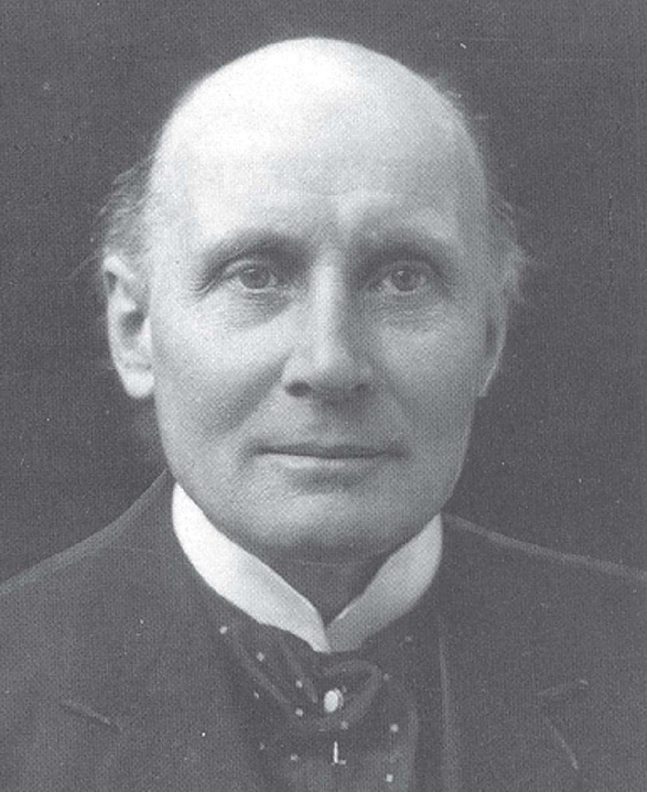
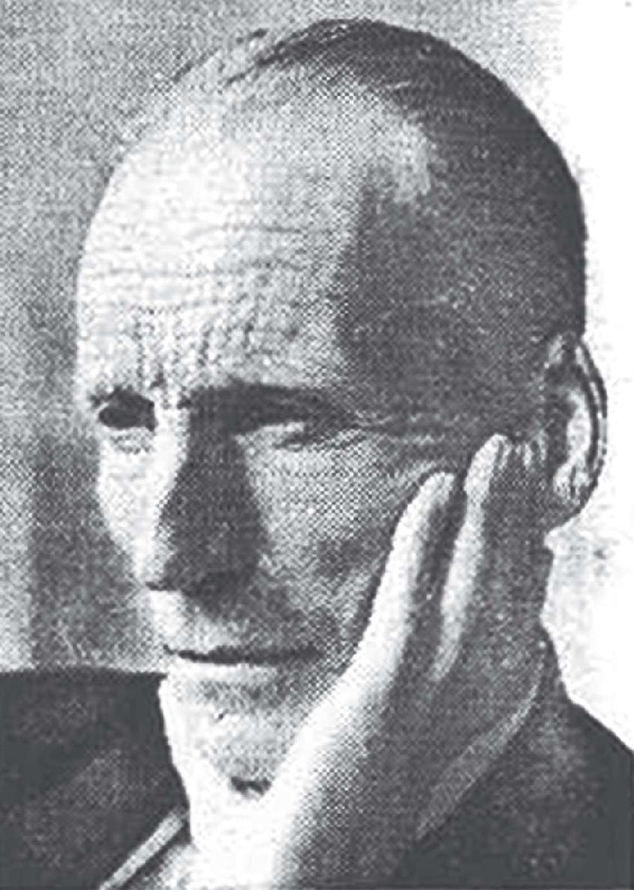
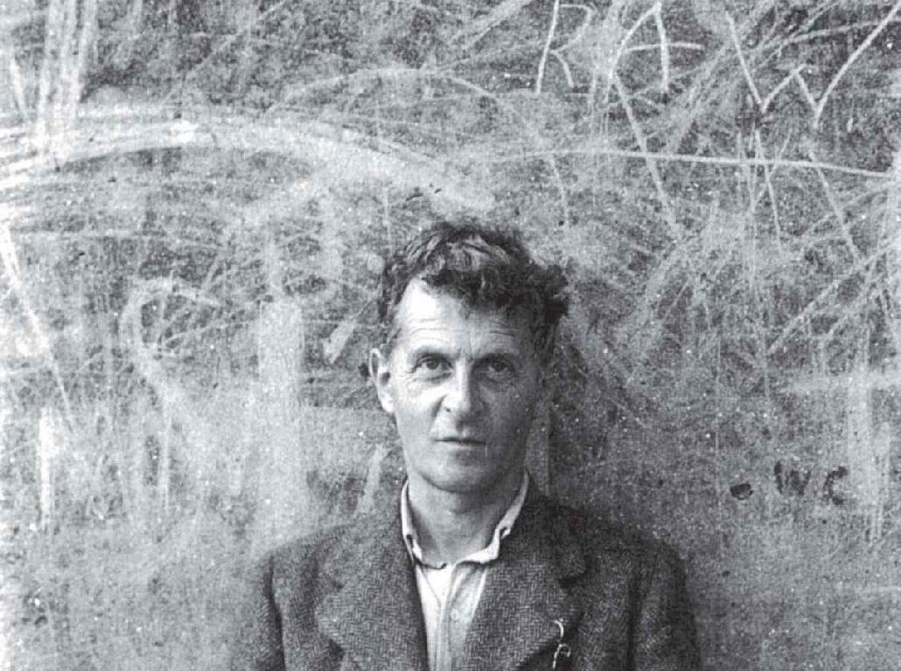
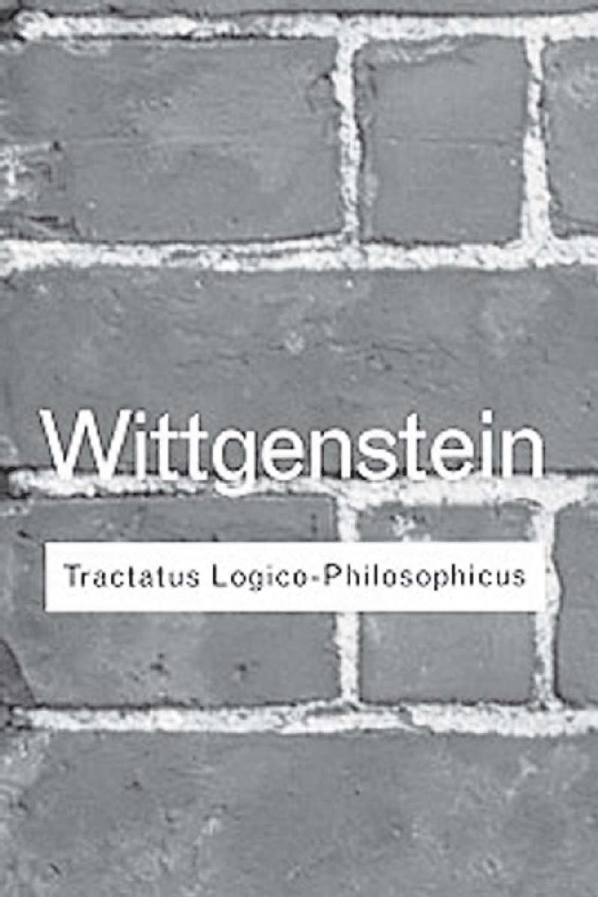
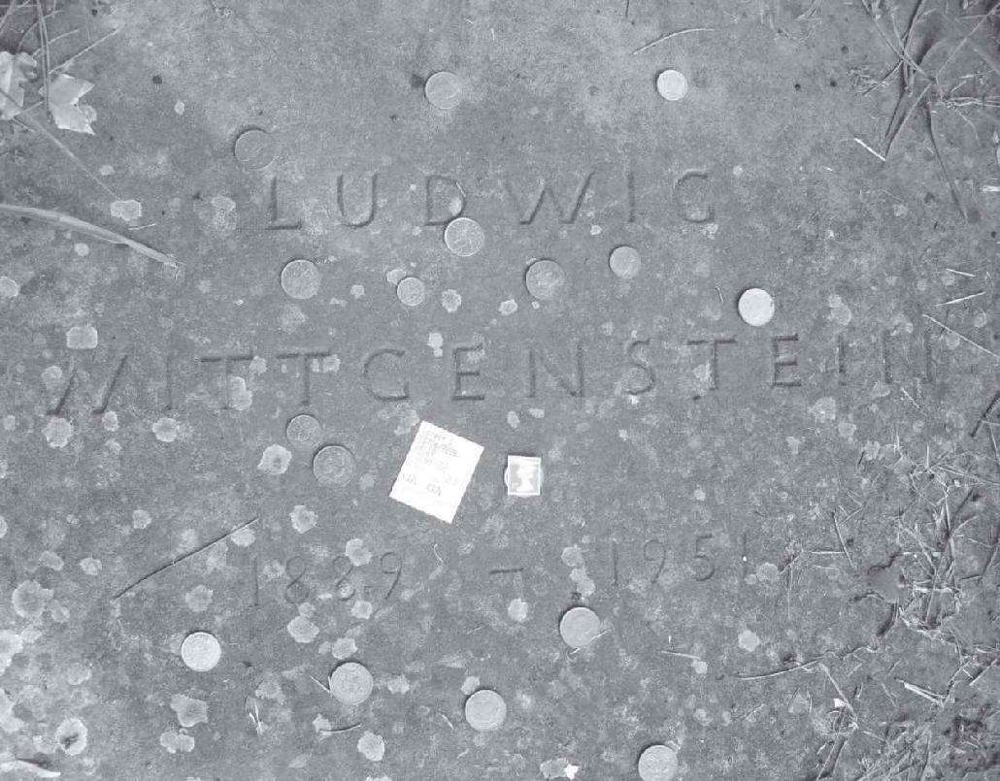
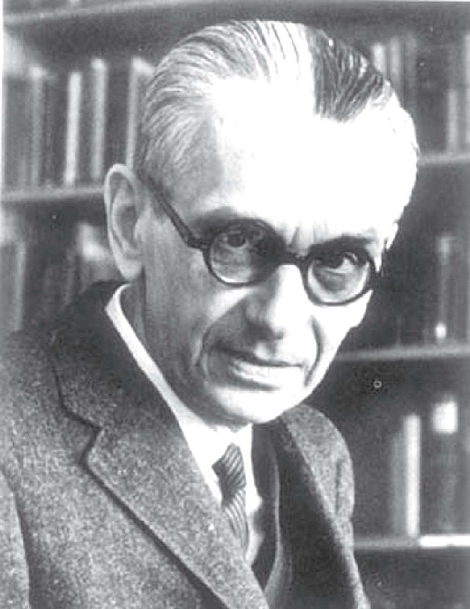
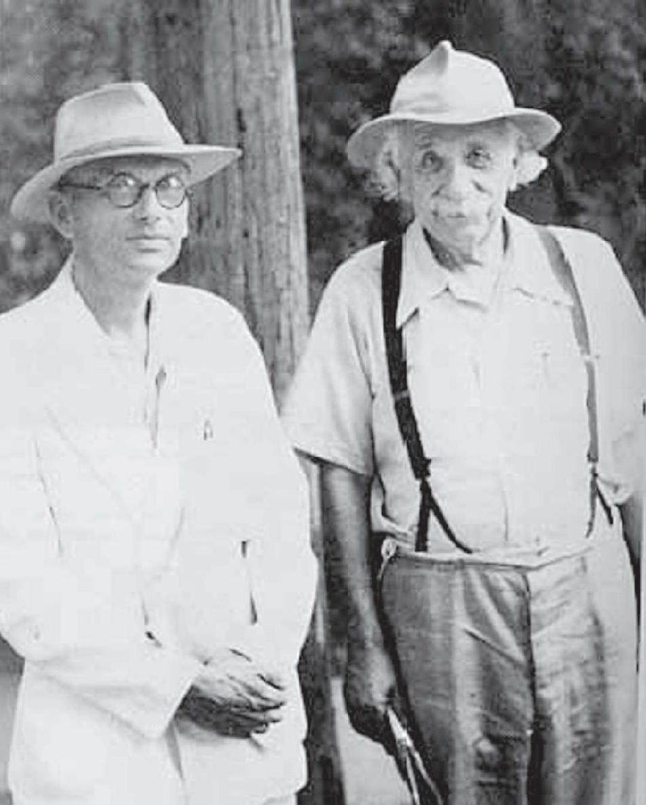

20世纪以来，数学的抽象化不仅拉近了它与科学、艺术的关系，也使得它与哲学的有效合作再次变得可能，这是自古希腊和17世纪以来的第三次。巧合的是，数学自身的危机也恰好出现了三次，且二者在时间上几乎一致。第一次是古希腊时期无理数或不可公度量的发现，这与所有数可由整数或整数之比来表示的论断相矛盾；第二次是在17世纪，微积分在理论上出现了一些矛盾，焦点是：无穷小量究竟是零还是非零。如果是零，怎么能用它做除数？如果不是零，怎么能把包含无穷小量的那些项去掉？
毕达哥拉斯学派发现，边长为1的正方形的对角线长度既不是整数，也不能由整数之比表示，这引发了第一次数学危机。相传有个叫希帕索斯（Hippasus）的门徒因为泄密而被扔进地中海淹死，他的出生地梅塔蓬图姆恰巧是他的老师毕达哥拉斯被谋杀的地方。两个世纪以后，欧多克斯（Eudoxus，公元前408—前355）通过在几何学中引进不可通约量的概念，将这一危机化解。两条几何线段，如果存在一条第三线段能同时量尽它们，就称这两条线段是可通约的，否则为不可通约的。正方形的边与对角线，就不存在量尽它们的第三线段，因此它们是不可通约的。只要承认不可通约量的存在，所谓的数学危机就不复存在了。
2000多年后，微积分的诞生使得数学再次出现危机，在数学基础层面引发了矛盾。例如，无穷小量是微积分的基础概念之一，牛顿在一些典型的推导过程中，先是用无穷小量做分母进行除法运算，然后把无穷小量看作零，消掉那些包含它的项，从而得到想要的公式。尽管这些公式在力学和几何学领域的应用证明它们是正确的，但其数学推导过程却在逻辑上自相矛盾。直到19世纪上半叶，柯西发展了极限理论，这个问题才得到解决。柯西认为无穷小量是要怎样小就怎样小的量，在本质上它是以零为极限的变量。
随着19世纪末分析严格化的最高成就——集合论的诞生，数学家们以为有希望一劳永逸地摆脱数学基础所面对的危机。1900年，法国人庞加莱在巴黎国际数学家大会上宣称：“现在我们可以说，完全的严格化已经实现了！”但是他的话音未落，英国数学家兼哲学家罗素就在第二年给出了简单明了的集合论的“悖论”，挑起了关于数学基础的新的争论，引发了第三次数学危机。为解决这场危机，人们对数学基础进行了更深入的探讨，促进了数理逻辑的发展，使之成为20世纪纯粹数学的又一重要趋势。

多才多艺的伯特兰·罗素

罗素的老师怀特海，他称17世纪为“天才的世纪”
1872年，罗素出身于英格兰的一个贵族家庭，其祖父曾两度出任英国首相。罗素3岁时就失去了双亲，严格的清教徒式教育导致他在11岁时对宗教产生了怀疑。他以怀疑主义的目光来探究，“我们能知道多少，以及拥有何种程度的确定性和不确定性”。随着青春期的到来，孤独和绝望徘徊在他心头，让他产生了自杀的念头。最终，对数学的痴迷让他逐渐摆脱了自杀的想法。18岁那年，罗素考入剑桥大学，此前他受的教育全部是在家中。他试图在数学中寻找确定又完美的目标，但在大学的最后一年，他被德国哲学家黑格尔的观点吸引并喜欢上了哲学。
显而易见，最适合罗素的研究领域应该是数理逻辑，正巧剑桥大学有最适宜的土壤和一流的志同道合者，包括和他亦师亦友的阿尔弗雷德·怀特海（Alfred Whitehead，1861—1947）、比他小一岁的摩尔（G.E.Moore，1873—1958）和他后来的学生维特根斯坦。精通数学的罗素认为科学的世界观大多是正确的，在此基础上他确定了三大哲学目标。首先，把人类认识上的虚荣、矫饰减少到最低限度并使用最简单的表达方式。其次，建立逻辑和数学之间的联系。再次，从语言去推断它所描述的世界。对于这些目标，罗素和他的同行后来或多或少地做到了，由此奠定了分析哲学的基础。
罗素的影响之所以深远，部分原因还在于他善于做普及工作。他的哲学著作语言优美、通俗易懂，无论《西方哲学史》《西方的智慧》，还是《人类的知识》，许多当代哲学家便是被他的书吸引入行的。同时，罗素的一些著作超出了哲学的范畴，涉及社会、政治和道德的方方面面，并满怀激情地把敏感问题指出来。他因此两次被监禁、罚款，并被剥夺了在剑桥大学讲课的资格。尽管如此，1950年，罗素仍意外地获得了诺贝尔文学奖。之后，大学学习数学专业的俄罗斯作家索尔仁尼琴（A.Solzhenitsyn，1918—2008）和南非出生的澳大利亚作家库切（J.M.Coetzee，1940—）也先后获得了1970年和2003年的诺贝尔文学奖。
所谓“罗素悖论”是这样的：有两种集合，第一种集合不是它自己的元素，大多数集合都是这样的；第二种集合是它自己的一个元素A∈A，例如由一切集合组成的集合。那么，对于任何一个集合B，它不是第一种集合就是第二种集合。假设第一种集合的全体构成一个集合M，那么M属于哪种集合？如果M属于第一种集合，那么M应该是M的一个元素，即M∈M，但是满足M∈M关系的集合应属于第二种集合，由此出现矛盾。而如果M属于第二种集合，那么M应该满足M∈M的关系，这样一来M又属于第一种集合，再次出现矛盾。
1919年，罗素又提出上述悖论的通俗形式，即所谓的“理发师悖论”：
某乡村理发师宣布了一条规则：他决定给所有不给自己刮脸的人刮脸，并且只给村里这样的人刮脸。试问：理发师是否给自己刮脸呢？
无论如何，这都会得出矛盾的结论，从而明白无疑地揭示了集合论本身确实存在着矛盾。由于严格的极限理论的建立，数学的第二次危机已经被化解，但极限理论是以实数理论为基础的，而实数理论又是以集合论为基础的，现在集合论遭遇了罗素悖论，因而引发了数学史上的第三次危机。
挑战数学家的乡村理发师

拓扑学的奠基人布劳威尔，他发现了不动点定理
为了消除悖论，人们开始对集合论进行公理化。最早进行这一尝试的是德国数学家策梅罗（E.Zermelo，1871—1953），他提出了7条公理，建立了一种不会产生悖论的集合论，后经过德国数学家弗兰克尔（A.A.Fraenkel，1891—1965）的改进，成为一个无矛盾的集合论公理系统，即所谓的“ZF公理系统”。这场数学危机到此缓和下来，但ZF公理系统本身是否会出现矛盾呢？没人能够保证。美国数学家科恩（P.J.Choen，1934—2007）证明，在ZF公理系统下康托尔连续统假设的真伪无法判别，这在某种意义上否定了希尔伯特在1900年巴黎国际数学家代表大会上提出的第一个问题，科恩因此获得1966年的菲尔兹奖。可以预见，意想不到的事今后仍会不断出现。
为了进一步解决集合论的悖论，人们应该从逻辑上去寻找问题的症结。由于数学家们的观点不同，形成了数学基础的三大学派，分别是：以罗素为代表的逻辑主义学派，以布劳威尔（L.E.J.Brouwer，1881—1966，荷兰数学家）为代表的直觉主义学派，以希尔伯特为代表的形式主义学派。这些学派的形成和活跃，将把人们对数学基础的认识提高到一个空前的高度，虽然他们的努力最终未能取得满意的结果，但却对由莱布尼茨开启的数理逻辑学的形成和发展起到了推动作用。限于篇幅，下面我们仅介绍这三大学派的部分论点。
首先我们来看逻辑主义学派，按照罗素的观点，数学就是逻辑，全部数学都可以由逻辑推导得出，而不需要数学所特有的任何公理。数学概念可以通过逻辑概念来定义，数学定理可以由逻辑公理按逻辑规则推导得出。至于逻辑的展开，则是依靠公理化的方法进行。为了重建数学，他们提出了命题函数和类型论之后，又定义了基数和自然数，并在此基础上建立了实数系、复数系、函数以及全部分析，几何也可以通过数来引进。这样一来，数学就成了没有内容只有形式的哲学家的数学了。
与逻辑主义学派相反，直觉主义学派的基本思想是：数学独立于逻辑。坚持数学对象的“构造性”定义，是直觉主义的精粹。按照布劳威尔的观点，要证明任何对象的存在，必须同时证明它可以用有限的步骤构造出来。在集合论中，直觉主义只承认可构造的有穷集合，这就排除了像“所有集合的集合”那样容易引发矛盾的集合。可是，有限的可构造性主张也导致“排中律”（非真即假）被否定，也就是说，无理数的一般概念，以及无限多个自然数中必存在一个最小者这个“最小数定理”也不得不牺牲掉。
希尔伯特指出，“禁止数学家使用排中律，就像禁止天文学家使用望远镜。”在批判直觉主义的同时，他抛出了准备已久的“希尔伯特纲领”，后人称之为“形式主义纲领”。希尔伯特主张，数学思维的基本对象是数学符号本身，而非它们表示的意义，如物理对象。他还认为，所有数学都能归结为处理公式的法则而不用考虑公式的意义。形式主义吸取了直觉主义的某些观点，保留了排中律，引进了所谓的“超限公理”，也证明了施以若干限制的自然数理论的相容性。可是，正当人们满怀希望时，哥德尔却提出了他的不完备性定理。
在介绍哥德尔的不完备性定理之前，我想先谈谈罗素的一个学生和合作者——维特根斯坦，正是他把逻辑学提升到纯粹哲学的高度。1889年，维特根斯坦出生在维也纳的一个富有的犹太企业家家庭，是8个孩子中年龄最小的，14岁以前他一直在家里受教育。他在柏林读完工程学以后，于1908年考入曼彻斯特大学，专攻航空学，他一生的大部分时光都在英国度过。据说他曾为飞机设计了一种喷气反冲推进器，并因此对应用数学产生了兴趣。之后他喜欢上纯粹数学，为了进一步了解数学基础，又转向数理哲学。

最有数学意味的哲学家维特根斯坦
1912年，23岁的工科大学生维特根斯坦来到剑桥大学，在三一学院度过了5个学期。他得到了哲学家罗素和摩尔的赏识，两位大师都认为维特根斯坦的才智至少与他们并驾齐驱。可是，第一次世界大战爆发后，维特根斯坦自愿参加了奥地利军队，起初他在东部前线当一名炮兵，后来去了土耳其，于1918年冬天被意大利士兵俘虏。此后，维特根斯坦与剑桥失去了联系，罗素在次年出版的《数理哲学导论》里在谈及维特根斯坦的工作时提到，“也不知道他是否还活着”。
1919年，维特根斯坦在战俘营里给罗素写了一封信，原来他在狱中读到老师的著作，并解答了书中提出的几个问题。他获释以后，师生二人都希望能尽快相聚，以便当面讨论哲学问题。可是，由于维特根斯坦受俄国大文豪托尔斯泰的影响，认为不应该享受财富，就把相当可观的私人财产分给了家庭的其他成员，此时的他身无分文。不得已，罗素替维特根斯坦卖掉了他留在剑桥的部分家具，才凑足了他的旅费，两个人终于在阿姆斯特丹会面了。

《逻辑哲学论》封面

哲学家的硬币，维特根斯坦之墓。作者摄于剑桥
由这样一位有毅力和责任感的天才经过长期的努力，在不同的时期建立起两种极具独创性的思想体系，完全是有可能的。不仅如此，维特根斯坦的每一种思想体系都有一种精致而有力的风格，极大地影响了当代哲学。他还留下了两部经典的哲学著作：第一本是《逻辑哲学论》（1921），第二本是《哲学研究》（1953）。除了一篇标题为“关于逻辑形式的一些看法”的短文以外，《逻辑哲学论》是维特根斯坦生前唯一出版的著作。
《逻辑哲学论》是一部哲学巨著，这部书的中心问题是：“语言是如何可能称其为语言的？”让维特根斯坦感到惊讶的是我们司空见惯的一个事实，即一个人居然能听懂他以前从未听到的句子。他对这个问题是这样解释的：一个描述事物的句子或命题必定是一幅图像。命题显示其意义，也显示世界的状态。维特根斯坦认为，所有的图像和世界上所有可能的状态一定具有某种相同的逻辑形式，它既是“表现形式”，也是“实在形式”。
但是，这种逻辑形式本身却得不到说明，或者说是无意义的。维特根斯坦打了一个比方，它就像梯子，当读者爬上这架梯子后，就必须扔掉它，这样一来才能正确地看世界。不能用语言说明的还有其他一些东西，如实在的简单元素的必然存在，思想和意愿的自我的存在，以及绝对价值的存在。这些不能说明的东西也无法想象，因为语言的界限就是思想的界限。这本书的最后一句话是维特根斯坦留给我们的一句箴言，“对于我们不能言说的，必须保持缄默。”
维特根斯坦声称，“哲学不是一种理论体系，而是一种活动，一种澄清自然科学的命题和揭露形而上学的无为的活动。”事实上，他也在身体力行地从事这项活动。由于维特根斯坦认为，《逻辑哲学论》已经完成了他对哲学的贡献，于是在接下来的几年里他到奥地利南方的几所山村任小学教师，此前他曾独自在挪威的乡间盖了一间小木屋。回到英国后，维特根斯坦把《逻辑哲学论》提交给剑桥大学，理所当然地获得了博士学位，并很快当选三一学院院士。
此后的6年里，维特根斯坦一直在剑桥大学教书，其间他对《逻辑哲学论》渐生不满，于是开始向两位学生口述（并非老得不能动笔）自己思想的新发展。在他访问过苏联（原打算在那里定居）之后，又到挪威的小木屋住了一年。回到剑桥大学后他接替了摩尔的讲座教授职位，随后爆发了第二次世界大战，他去了伦敦的一家医院做看护，后来又在纽卡斯尔的一家研究所做助理实验员，其间他完成了《哲学研究》的主要部分。“二战”后，维特根斯坦回到剑桥大学做了两年教授就辞职去了爱尔兰，在那里待了两年写完了全书。
说起维特根斯坦的《哲学研究》，虽然它与逻辑学没有必然的联系，却也没有完全脱离数学。在这部力作里，他放弃了原先的想法，认为无穷无尽的语言背后并没有统一的本性。他以游戏为例，指出一切游戏所共有的性质不存在，它们仅具有“家族”的相似性。他还说，当我们仔细观察作为游戏汇集在一起的各种不同的具体活动时，“便能发现一张由相互重叠、彼此交叉的相似点构成的复杂的网，有时是总体相似，有时是细节相似”。
为此维特根斯坦引入了好几个数列的例子，在他看来，数字也构成了这样一个“家族”。他所关心的事情是，领会并遵循一条数学规则的含义是什么？其中一个例子是：当一个人看见另一个人写下
1，5，11，19，29，…
这些数字时声称，“现在我可以继续写下去了”。这可能会出现多种情况，其中一种情况是，这个人试图用各种公式来续写这个数列，直到他发现公式an =n2 +n–1，19后面的29就验证了这个假设。还有一种情况是，他可能没有想到这个公式，而是注意到前后两个数之差构成了一个等差数列4、6、8、10，他由此知道接下来的那个数是29+12=41。无论哪种情况，他都可以不费力气地继续写下去。
维特根斯坦试图证明的观点是，一个人对于数列的原则理解并不意味着他找到了什么公式，因为他可能根本不需要这个公式。同样，你也可以想象他的理解仅仅源于公式，而不是因为灵光乍现或其他特殊的经验。由此得出的教训是，接受一条规则并不等于穿上了一件紧身夹克。在任何时候，对于规则是接受还是拒绝，都是我们的自由。维特根斯坦还认为，数学运算过程的结果不是事先确定的。尽管我们可以遵循在我们看来是清清楚楚的程序，但却无法预知这个程序将把我们引向何处。
20世纪末，美国《时代周刊》杂志评选出过去100年里最具影响力的100个人物，其中科技和学术精英占了1/5。在这20个人中，哲学家和数学家各有一位，前者是维特根斯坦，后者是我们接下来要介绍的哥德尔。他们两人的共同点是，都横跨数学和哲学两大领域，都是奥地利人，都用非母语的英文写作。不同的是，一个移居英国后死于剑桥大学，另一个移居美国后死于普林斯顿大学。当然，他们去世时都不是奥地利公民。
1906年，哥德尔出生在摩拉维亚的布吕恩城，今天这座城市的名字叫布尔诺，属于捷克共和国。在历史上布尔诺曾几易其主，19世纪的奥地利遗传学家孟德尔（G.J.Mendel，1822—1884）就是在此城的一座修道院里发现了遗传学的基本原理，后来它又成为捷克作曲家亚纳切克（L.Janacek，1854—1928）终生居住的地方。说起摩拉维亚，在这个中欧著名的地理区域出生的还有精神分析学家弗洛伊德（S.Freud，1856—1939），以及有着“现象学之父”美誉的哲学家胡塞尔（E.Husserl，1859—1938），后者曾在维也纳大学数学系获得变分法方向的博士学位。哥德尔在故乡长大，直到考入维也纳大学攻读理论物理，此前他对数学和哲学产生了浓厚的兴趣，并自学了高等数学。

最有哲学意味的数学家哥德尔

哥德尔与爱因斯坦
从大学三年级开始，哥德尔的第一爱好转向了数学，他大学时期的借书卡表明他看了许多数论方面的书。同时，在数学老师的介绍下，他参加了著名的“维也纳小组”的某些活动。这是一个由哲学家、数学家、科学家组成的学术团体，主要探讨的语言和方法论，在20世纪哲学史上占有重要的地位，也被称为“维也纳学派”。在这个学派的宣言书《科学的世界观：维也纳学派》所附名单中，23岁的哥德尔成为14个成员中最年轻的一个。1930年，他以《逻辑谓词演算公理的完全性》获得哲学博士学位，随后建立了震惊世界的哥德尔第一和第二不完备性定理。
1931年1月，维也纳的《数学物理学月刊》发表了一篇题为“论《数学原理》及有关系统的形式之不可判定命题”的论文。几年以后，它就被视为数学史上具有重大意义的里程碑，作者是不到25岁的哥德尔。这篇论文的结果首先是否定性的，既推翻了数学的所有领域都能被公理化的信念和努力，又摧毁了希尔伯特设想的证明数学的内部相容性的全部希望。同时，这种否定最终促成了数学基础的划时代变革，既分清了数学中的“真”与“可证”的概念，又把分析的技巧引入数学基础。
哥德尔第一不完备性定理： 对于包含自然数系的形式体系F，如果是相容的，则F中一定存在一个不可判定命题S，使得S与S之否定在F中皆不可证。
也就是说，自然数系的任何公设集如果是相容的，就是不完备的。由此得出结论：任何形式系统都不能完全刻画数学理论，总有些问题从形式系统的公理出发不能解答。更有甚者，几年以后，美国数学家丘奇（A.Church，1903—1995）证明了，“对于包含自然数系的任何相容的形式体系，不存在有效的方法，判定该体系的哪些命题在其中是可证的”。在第一不完备性定理的基础上，哥德尔进一步提出第二不完备性定理。
哥德尔第二不完备性定理： 对于包含自然数系的形式系统F，如果是相容的，则F的相容性不能在F中被证明。
也就是说，在真的但不能由公理来证明的命题中，包括了这些公理是相容的（无矛盾性的）这一论断。这就使得希尔伯特的希望破灭了。现在看来，经典数学的内部相容性不可证，除非我们采用那些复杂的推理原则，但这些原则的内部相容性与经典数学的内部相容性一样值得怀疑。
哥德尔的这两条不完备性定理表明，没有哪一部分数学能做到完全的公理推演，也没有哪一部分数学能保证其内部不存在矛盾。这些都是公理化方法的局限性，一方面，它们说明数学证明的程序无法确实不与形式公理的程序相符；另一方面，它们也旁证了人的智慧不能被完全的公式化所替代。对于形式系统来说，“可证”是可以机械地实现的，“真”则需要进一步的思想能动性。换句话说，可证的命题必然是真的，但真的命题却未必是可证的。
哥德尔不完备性定理如今已成为数学史上最重要的定理，但它的证明专业性太强，我们在这里就不做介绍了。值得一提的是，证明中提出的“递归函数”的概念是哥德尔的一位朋友来信建议的，这个朋友三个月后意外死亡。哥德尔不完备性定理出名以后，递归函数也随之誉满天下。递归函数后来成为算法理论的起点，还引导图灵提出了理想计算机的概念，为电子计算机最初的研制提供了理论基础。与此同时，有关悖论与数学基础的论证也渐趋平静，数学家们把更多的精力放在数理逻辑研究上，大大推动了这门学科的发展。